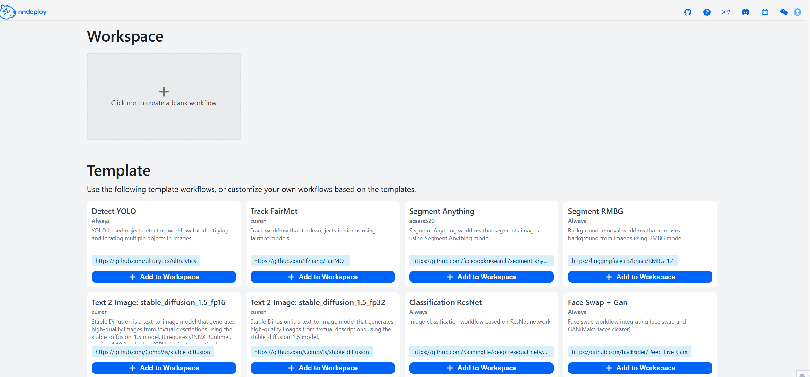

Python 快速入门¶
nndeploy 提供了完整的 Python API，支持快速部署和推理各种深度学习模型。
环境要求¶
Python 3.10+
支持的操作系统：Linux(< Python3.13 && x86)、Windows、macOS(OS >=14 && ARM)，其他平台建议采用开发者模式
安装方式¶
方式一：PyPI 安装（推荐）¶
适用于大多数用户的快速安装：
pip install nndeploy
方式二：源码编译安装¶
适用于开发者用户：
首先参照build文档，完成编译安装
cd ../python
pip install -e .
安装验证¶
运行以下命令确认安装成功：
python -c "import nndeploy; print(nndeploy.__version__)"
快速上手¶
启动可视化界面¶
nndeploy 提供了直观的 Web 界面用于模型部署：
# 启动 Workflow 的 Web 服务
cd /path/nndeploy
python app.py --port 8000
# 或 使用简化命令 启动 Workflow 的 Web 服务
nndeploy-app --port 8000
注：Windows下命令行启动：nndeploy-app.exe –port 8000
在浏览器中访问 http://localhost:8000 开始使用。

启动参数说明¶
app.py启动脚本支持以下参数用于自定义Web服务行为：
| 参数名 | 默认值 | 说明 |
|---|---|---|
--host |
0.0.0.0 |
指定监听地址 |
--port |
8888 |
指定监听端口 |
--resources |
./resources |
指定资源文件目录路径 |
--log |
./logs/nndeploy_server.log |
指定日志输出文件路径 |
--json_file |
detect.json,track.json |
将指定工作流拷贝到工作区 |
--front-end-version |
! |
指定前端版本，格式为 owner/repo@tag，如 nndeploy/nndeploy-ui@v1.0.0 |
--plugin |
[] |
支持传入多个python文件路径或者动态库路径，用于加载用户写好的自定义插件，默认为空 |
常见问题¶
Q1: 浏览器打开 http://localhost:8000 显示404？
A1: 请确认你是否已经下载前端资源。
Q2: 启动时download前端资源文件一直失败怎么办？
A2: 从https://github.com/nndeploy/nndeploy_frontend/releases/下载对应的dist.zip，将zip解压到frontend/owner_repo/tag/目录下（通常下载失败后会自动建立该目录），重新启动服务。
Q3: 如何切换使用不同版本的前端?
A3: 使用 –front-end-version 参数指定版本，例如：
python app.py --front-end-version nndeploy/nndeploy-ui@v1.1.0
Q4: 前端资源下载完成了，还是无法打开前端界面？
A4: 检查服务端IP以及端口是否正确，如果localhost以及127.0.0.1都无法访问，替换成局域网IP（如192.168.x.x）重试。
Q5: 前端、模板、log、数据资源过期
A5: 执行 nndeploy-clean / python clean.py，清理过期的资源